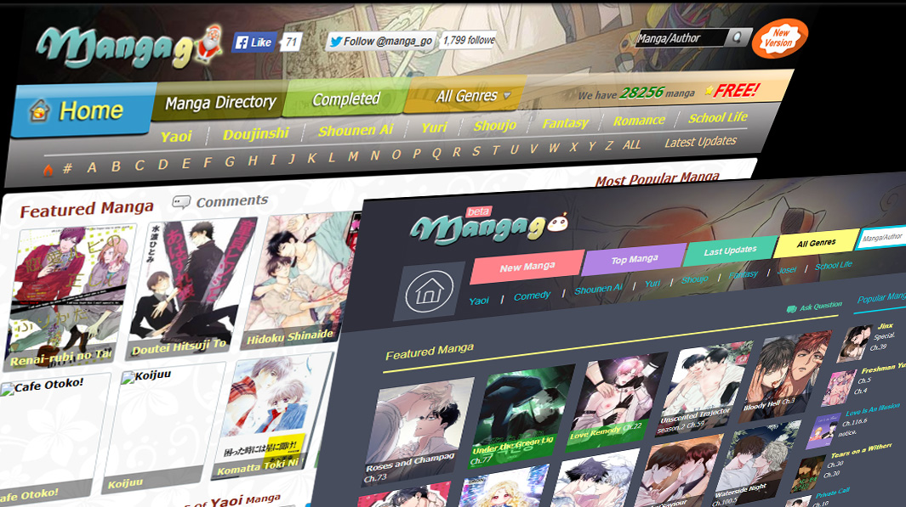

Mangago - Read Manga Online For Free | Official
Go to HomepageMangago is a beloved online platform that manga lovers from all walks of life flock to in order to discover new stories, follow ongoing series, and delve into fresh adventures. Whether you’re a seasoned manga aficionado or brand-new to the world of illustrated storytelling, Mangago can be a game-changer. Its enormous library and friendly community have turned it into a go-to hub for anyone eager to explore a vast collection of manga titles without the hassle of physical books. In this article, we’ll dive into why Mangago is such a phenomenon, how to make the most of it, and what you need to know to enhance your reading experience in the most enjoyable way possible.
What Exactly Is Mangago?
Mangago is an online platform dedicated to sharing manga content from various genres, art styles, and creators. Many readers see it as a one-stop destination for ongoing series and classic favorites alike. When people mention mangago, they often refer to its easy-to-use interface, extensive titles, and supportive user community.
One aspect that stands out is its focus on bringing readers together. You can leave comments, reviews, or even recommendations for others who share your passion. This sense of connection distinguishes Mangago from some other manga sites, offering a feeling that you’re part of a manga-loving family, all while enjoying digital convenience.
If you’re curious about its background, Mangago emerged during a wave of online manga platforms that flourished with internet accessibility. Over the years, it has cemented its reputation by continually updating its database with the latest chapters and lesser-known gems. For many manga enthusiasts, it’s the perfect gateway to both mainstream hits and hidden treasures.
The Growing Popularity of Mangago
Why is mangago so popular among manga aficionados? The answer lies in its seamless browsing experience and deep library. From action-packed shonen adventures to heartwarming slice-of-life tales, there’s always something new to uncover. Plus, you can find helpful features like bookmark options, categorization by genre, and user ratings, all of which simplify your search for your next read.
Here are a few key factors fueling Mangago’s popularity:
- Vast Catalog: The site covers a broad spectrum of genres, appealing to diverse audiences.
- Community Engagement: Users actively participate by leaving comments, creating custom reading lists, and sharing recommendations.
- Timely Updates: Many series receive prompt uploads, helping fans stay in sync with the latest chapters.
- Free Access: Many titles are accessible at no cost, encouraging more readers to explore new series.
All these perks make Mangago a must-visit for anyone seeking an easily navigable and engaging manga reading environment.

How to Get Started on Mangago
Ready to explore mangago? Here’s a simple step-by-step approach to begin your manga journey:
- Create an Account: Although you can browse some content without registering, a free account unlocks additional features like bookmarks and notifications.
- Pick Your Genre: Are you into romance, thriller, or supernatural themes? Filter your search by genre to find stories that match your interests.
- Check Ratings & Reviews: Before diving into a series, see what other users say about it. This can guide you toward quality reads.
- Start Reading: Click on a series, pick a chapter, and you’re all set! You can often toggle between different reading modes if you prefer certain layouts.
- Engage with the Community: Leave comments, ask questions, or join discussions. Your insights might help another reader discover a new favorite.
Following these steps ensures you get the most out of your journey on Mangago, making it easier to navigate the platform’s robust offerings and connect with fellow fans.
Expert Insight: The Passion Behind Manga Communities
“Digital platforms like Mangago have revolutionized how we engage with manga. You’re not just reading; you’re part of a thriving fan ecosystem.” – Dr. Satoshi Yamane, Cultural Studies Professor at Tokyo Lit University
According to Dr. Yamane, communities forming around manga content can drive its popularity to new heights. People from different backgrounds connect over shared storylines, emotional arcs, and fan theories. The interactive aspect even influences creators, encouraging them to shape narratives around what resonates most strongly with the fan base.
Benefits of Using Mangago
With so many manga reading platforms on the internet, why choose mangago? Let’s break down some of the unique benefits this platform offers:
- Convenient Access: You can explore countless manga titles from the comfort of your home or on the go.
- Cost-Effectiveness: Mangago typically features many titles for free, letting you discover new series without breaking the bank.
- Community Support: Got a question or looking for recommendations? The platform’s community is generally friendly and helpful.
- Varied Genres: From historical drama to futuristic sci-fi, you’ll never run out of reading material.
If you’re short on time, having a digital library at your fingertips can be a real lifesaver. Instead of hunting down physical volumes, everything you need is just a click away. Plus, the regular updates ensure you don’t miss the latest chapter of your current obsession.
Popular Manga Genres on Mangago
Delving into the world of mangago opens up an extensive array of genres, each carrying its own flavor and fan base. Here’s a glimpse of some popular categories you might want to explore:
| Genre | Key Themes | Recommended For |
|---|---|---|
| Shonen | Action, Friendship, Overcoming Odds | Fans of high-energy battles and heroic quests |
| Shojo | Romance, Emotional Growth, School Life | Readers who enjoy heartfelt stories and teenage drama |
| Seinen | Mature Themes, Psychological Complexity | Adults seeking deeper plot lines and nuanced characters |
| Josei | Realistic Romance, Career Struggles | Those interested in the everyday lives of adult women |
| Yaoi / BL | Male-Male Romance, Emotional Bonds | Readers looking for diverse representations of relationships |
No matter your preferences, Mangago has something for everyone. By browsing these genres, you might discover new favorites or rekindle your love for a classic storyline.
How Mangago Adapts to Readers’ Needs
For newcomers, the sheer breadth of manga might feel overwhelming. Fortunately, mangago caters to varied tastes and reading habits. Searching by genre, rating, or popularity helps you find hidden gems without spending hours scrolling. If you’re the type who prefers reading one series at a time, you can bookmark or “subscribe” to it, receiving alerts when new chapters drop.
Such flexibility means you can tailor your manga experience to fit into your lifestyle. Whether you read in quick bursts during your commute or binge entire story arcs on the weekend, Mangago’s user-friendly navigation and robust search capabilities make it accessible to every type of reader.
Tips and Tricks for Enhancing Your Mangago Experience
A smooth reading experience can significantly boost your enjoyment. Below are some tips to get the most out of mangago:
- Use Bookmarks Wisely: Track multiple ongoing series by creating organized bookmarks. This ensures you never miss an update.
- Engage with Reviews: Before starting a new manga, skimming through reviews can help set your expectations.
- Adjust Reading Settings: Many online platforms let you modify brightness or page orientation. Tweak these to minimize eye strain.
- Schedule Breaks: If you’re marathoning a lengthy series, remember to take breaks to rest your eyes and recharge.
- Explore User Lists: Sometimes, other members compile specialized lists like “Top Underrated Manga” or “Best Supernatural Titles.” These can be treasure troves for discovering lesser-known works.
Small adjustments in how you use Mangago can elevate your overall reading experience. By personalizing the platform to your needs and preferences, you’ll find it more enjoyable and manageable in the long run.
Expert Insight: Why Communities Matter
“When readers share insights, theories, and reactions, it enhances everyone’s understanding of the manga. Mangago’s interactive features promote this collective growth.” – Professor Hanae Miyamoto, Manga Literature Analyst
Professor Miyamoto points out that discussions can reveal layers of storytelling you might miss on your own. Engaging in community forums or comment sections can turn a solitary reading experience into a lively group conversation. This dynamic enriches not only your interpretation of the story but also your sense of belonging in a global network of manga fans.
Navigating Potential Pitfalls
While mangago offers many advantages, no platform is perfect. It’s wise to keep certain considerations in mind:
- Copyright Issues: Some content might be uploaded unofficially, so always check the legality of the manga you’re reading.
- Ad Intrusions: Free platforms often rely on ads. Be prepared for occasional pop-ups or banners.
- Unreliable Updates: Though Mangago is generally reliable, certain series may lag behind official release schedules.
- Mature Content: Some titles contain explicit themes. Always verify ratings or read the synopsis to avoid unpleasant surprises.
By exercising caution, you can minimize these drawbacks. Ad-blockers can help with intrusive ads, and verifying information through official channels ensures you’re supporting the manga industry ethically.
Mangago Not Working? Common Issues and Quick Fixes
There are times when mangago not working becomes a common complaint. Often, this can stem from temporary server issues, high traffic spikes, or even regional restrictions. Here’s what you can try if Mangago suddenly stops loading or behaves erratically:
- Clear Browser Cache and Cookies: Sometimes outdated cache files can hinder site performance.
- Switch Browsers or Devices: If one browser doesn’t work, try another. This helps isolate whether the issue is platform-specific.
- Check Internet Connection: A weak or unstable connection can lead to slow loading and frequent error pages.
- Look for Maintenance Notices: If Mangago is undergoing updates, you might experience downtime until the maintenance is completed.
- Use a VPN (If Allowed): Regional blocks can be bypassed with a VPN in areas where access is restricted, but always check local regulations.
If none of these steps resolve the problem, chances are the site is facing a more significant technical issue. Checking community forums or social media can help confirm whether others are encountering the same problem.
What Happened to Mangago?
In certain periods, you might notice rumors or concerns circulating about what happened to mangago. These arise whenever the site experiences unexpected downtime, legal inquiries, or domain shifts. While major platform overhauls can spark curiosity, Mangago typically bounces back with updated features and renewed stability.
Sometimes, domain changes or legal battles lead to temporary or permanent rebranding, causing confusion for frequent users. In such cases:
- Stay Updated: Follow official announcements or trusted community sources for verified news.
- Explore Alternative Mirrors: Mangago might launch mirror domains to bypass region-based blocks or to ensure continuous accessibility.
- Check Creator Channels: Content creators and translators often have their own social media pages or websites where they update readers on any changes.
If you’re ever in doubt, seeking out reliable forums or Manga-focused social media groups can clarify what’s going on behind the scenes. Ultimately, while changes may be disconcerting, Mangago’s core mission of bringing manga enthusiasts together remains intact.
The Ongoing Evolution of Mangago
Online manga platforms, including Mangago, continuously evolve to better serve users. Technological advancements, changing reading habits, and emerging industry trends all influence the site’s future. Innovations such as improved search filters, better mobile interfaces, and even social media integration could make the experience more immersive.
As new manga genres and storytelling methods emerge, expect Mangago to diversify its offerings. The platform might introduce more fan-driven initiatives, like polls or contests, to further engage the audience. Staying tuned to updates ensures you remain at the forefront of fresh developments, both on the site and in the wider manga community.
Case Study: A Weekend with Mangago
Sometimes, the best way to understand the appeal of mangago is to immerse yourself in it. Imagine a lazy weekend where you have nothing on your agenda except catching up on your favorite manga. You log into Mangago, scroll through your bookmarked series, and pick one that has just released a new chapter.
Minutes turn into hours as you get pulled into the storyline, occasionally switching tabs to discuss plot twists with other fans. You spot a recommendation in the comment section for a lesser-known series, so you give it a try. Before you realize it, the weekend is almost over, and you’ve explored multiple genres, engaged in a handful of discussions, and discovered a handful of promising new series to follow. That’s the power of Mangago—a space where time flies because you’re genuinely engrossed in the stories you love.
This sense of community and discovery is exactly what keeps readers coming back. You’re not just consuming content; you’re contributing to a vibrant collective of manga enthusiasts from around the globe.
Expert Insight: Broadening Horizons
“Manga is a global phenomenon, and platforms like Mangago serve as crucial bridges, connecting diverse cultures and narratives. It’s a window into new worlds.” – Lin Mei Chen, Independent Manga Translator
Lin Mei Chen has translated manga for various international audiences. She believes online communities foster cross-cultural dialogue, allowing readers to explore storylines and artistic styles they might never encounter otherwise. In many ways, Mangago transcends boundaries, offering a shared space for fans everywhere.
Conclusion
Ultimately, mangago stands out as a dynamic platform for manga enthusiasts looking for variety, community engagement, and convenience. Its vast catalog, user-friendly interface, and active readership combine to create an immersive space that appeals to both newcomers and experienced fans. Whether you’re into action-packed shonen battles, tender shojo romances, or anything in between, Mangago makes it easy to find a series that resonates with you and a community that supports your interests.
So if you’ve been on the fence about online manga reading, give Mangago a try. Dive into the endless stories waiting to be discovered, join in on discussions, and make the platform your personal gateway to a world of unforgettable characters and narratives.
FAQ
Q1: Is Mangago free to use?
Yes, Mangago generally allows you to read many titles without any cost. However, some users choose to support creators by purchasing official releases if they want to show extra appreciation.
Q2: Can I read Mangago on my smartphone?
Absolutely. The site’s interface is designed to be mobile-friendly, which means you can easily browse and read your favorite manga even when you’re on the go.
Q3: What if I can’t find my favorite manga on Mangago?
Not all series are available, especially newer or more niche titles. If you can’t find something, you might consider checking official distribution channels or alternative fan translation groups.
Q4: How often does Mangago update its manga library?
This varies based on the series in question. Popular titles might get updated almost immediately after each new release, while less mainstream stories can lag behind.
Q5: Is it legal to read manga on Mangago?
This depends on the region and the specific arrangement for each title. While some manga may be uploaded with permission, others might be unofficial scans. Always verify to ensure you’re reading in a way that supports the creators.
Q6: How do I join community discussions?
Simply register for an account, locate the comment sections or forum areas, and start sharing your thoughts. Many users love getting fresh perspectives!
Q7: Which genres does Mangago cover the most?
It’s quite balanced, but shonen, shojo, and BL are notably popular. Mangago tends to feature everything from mainstream hits to eclectic, lesser-known titles.
Go to Homepage